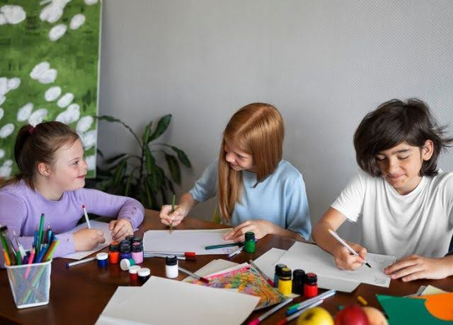
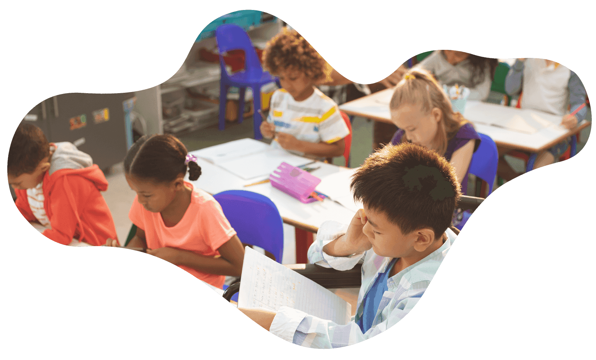

Melhoria das Práticas Pedagógicas
Desenvolvimento e aplicação de práticas pedagógicas inclusivas adaptadas às necessidades dos alunos.


Capacitação de Professores
Melhoria nas práticas de ensino dos professores e maior capacidade de lidar com a diversidade em sala de aula.
Integração da Tecnologia Assistiva
Introdução e uso de tecnologias assistivas para apoiar a aprendizagem de alunos com deficiências.
Melhora no desempenho acadêmico e na autonomia dos alunos com deficiências.
Fortalecimento da Colaboração Comunitária
Estabelecimento de parcerias com organizações locais e centros comunitários, e promoção da participação ativa das famílias.